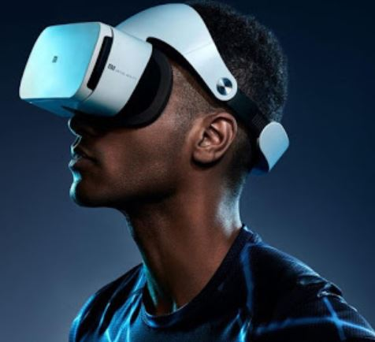

2021 Trend Forecast
Written 2020-12-09
AR, VR, MR

직접 가지 않아도 즐길 수 있어요!
4차 산업혁명의 핵심기술인 AR(증강현실), VR(가상현실), MR(혼합현실)이 더욱 더 부상할 것이라고 예상한다.
코로나의 발발로 많은 공연, 투어, 전시장이 인원수에 제한을 두거나 아예 진행하지 않는 경우가 많았다. 또한, 여행을 가기에도 두려움 때문에 쉽지 않은 일이다. 약 1년 동안 사람들의 문화생활은 줄어들고 있었지만, 이대로 없어지진 않을 것이라고 생각한다. 문화생활과 4차 산업기술의 접합이 이제는 일상화가 될 것이라고 생각한다. 실제로 2020년 1월부터 6우러까지 등록된 AR,VR,MR 기술 관련 프로젝트는 2019년 동기 대비 200%나 증가한 모습을 보였다. 이런 접합을 통해 문화생활의 형태가 많이 바뀔 것이다.
BEAUTY + TECH
개인 맞춤형 화장품!
이제는 대량소비가 통하지 않는다. 사람들은 개인에 적한한 상품들을 갖길 원한다. 현재까지는 알고리즘을 통해 유튜브나 쇼핑앱에서 사용자 취향에 맞는 상품들을 추천해준다. 하지만, 여기서 멈추는 것이 아니라 개인 맞춤형 생산까지 이루어질 수 있어야 한다고 생각한다.
IT 분야는 IT 기업 또는 가전제품과의 결합에서만 그치는 것이 아니라 다양한 분야와 결합하고 있다. 이러한 결합이 화장품 부분에서도 활발히 일어날 것이라고 생각한다. 화장품은 모든 사람이 똑같은 것을 사용하지 않고, 개인의 피부 상태와 형태에 따라서 천차만별이다. 하지만, 기존에 출시된 화장품들의 성분과 효과를 전부 살펴보면서, 딱 맞는 상품을 찾는 것이 힘들다.
이러한 상황속에서 기술을 활용해 사용들에게 적합한 상품들만 생산해내는 것이 중요하다고 생각한다. 실제로 아모레퍼시픽은 "3D 프린팅 마스크팩" 과 "LEC 플랙시블 패치"를 선보였다.
HOME DECO
집으로 개성 표현하기!
2019년 코로나바이러스가 전 세계로 퍼지면서 비대면 접촉에 대한 선호도가 점점 증가하고 있다. 이에 온라인 소비가 증가하며 학교 수업, 회사생활까지도 자택에서 이루어지는 것이 주를 이뤘다.
어쩔 수 없이 집에서 생활하는 사람들은 자신의 집에 관심을 가질 것이다. 또한, 이전에는 자신의 개성을 외적인 요소 (화장, 패션 등)로 표현할 수 있었다. 하지만, 외부활동 자제와 마스크 착용으로 인해 자신의 개성을 외적인 요소로 뽐내기에는 어려움이 있다. 이러한 점을 바탕으로 자신의 집을 꾸밈으로써 자신의 개성을 표현하고, 스스로 만족감을 얻어 나갈 수 있다고 예상한다. 실제로 앱 스토어 순위를 보면 "오늘의 집" (인테리어 정보 & 쇼핑 제공 앱)이 2019년에 비해 높은 순위를 차지하고 있는 것을 볼 수 있다.
이와 비슷하게 홈 트레이닝도 많은 인기를 얻을 것이라고 예상한다. "헬창", "근손실"과 같이 운동과 관련된 유행어가 많이 생겨나고 있다. 이를 통해 사람들이 건강에 대한 관심이 증가하고 있다는 것을 알 수 있다. 또한, 유튜브에 올라온 운동 영상들이 많은 인기를 얻는 것으로 보아 운동 시장도 커지리라 생각한다.
HUMAN
따뜻한 손길이 필요할 때!
사람들은 따뜻한 목소리에 귀 기울이고 있다. 코로나바이러스가 퍼지면서 비대면 접촉을 선호하지만, 오히려 사람의 손길과 공감이 필요한 시기가 되었다. 코로나라는 큰 어려움을 같이 이겨내고자 하는 의지가 많아지고 있다. 마음의 스트레스에 대해 풀어줄 무엇인가가 필요하다는 것이다.
또한, SNS를 통해 다양한 심리테스트가 유행하며 고민 상담을 하는 모습까지 많이 나타나고 있다. 이를 통해 사람들이 사람의 소중함에 대해 더 생각하고 사람과 사람 간의 따뜻한 접촉이 필요해지는 시기라고 생각한다.
따라서 앞으로 우리는 사람의 따듯함에 주목해야 한다. 또한, 심리와 관련된 직업, 시장이 많이 커지리라 예상한다.